전파전자통신기능사 (2012-10-06 기출문제)
1과목: 임의 구분
1. PSK(Phase Shift Keying) 방식의 특징으로 옳지 않은 것은?
- 전송로 등에 의한 레벨 변동의 영향을 적게 받는다.
- 심볼 에러 (symbol error) 가 우수하다.
- 변복조 회로가 비교적 복잡하다.
- 일정한 포락선 또는 진폭을 갖는 파형이다.
(정답률: 47%)

2. 전송 대역폭에 대한 설명으로 틀린 것은?
- 점유 대역폭 또는 채널 대역폭이라고도 한다.
- 단위는 [Hz]이다.
- 디지털 통신에서 통신로의 용량을 의미한다.
- 비트수에 관계없이 변조방식에 의해서 결정된다.
(정답률: 77%)
3. 다음 중 AM 통신 방식에 비해 FM 통신 방식의 특징으로 맞는 것은?
- 점유주파수대폭이 비교적 좁다.
- 주로 초단파대 이상에서 사용된다.
- 송∙수신기의 회로가 간단하다.
- 소비전력이 많다.
(정답률: 53%)
4. SSB 수신기에서 자동이득 조정이 곤란한 이유로 맞는 것은?
- 신호 주파수가 낮으므로
- 송신기의 출력이 적으므로
- 반송파가 존재하지 않으므로
- 측파대가 존재하지 않으므로
(정답률: 74%)
5. 다음 중 FM 무선송신기에 사용되는 회로는?
- 리미터회로
- 스켈치회로
- 디엠퍼시스회로
- 프리엠퍼시스회로
(정답률: 73%)
6. SSB 통신방식을 DSB 통신방식과 비교할 때 점유주파수대폭은?
- DSB 의 약 0.5 배
- 동일
- DSB 의 약 1.5 배
- DSB 의 약 2 배
(정답률: 56%)
7. 높이가 35[m] 인 1/4 수직 접지 안테나의 실효고는?
- 약 8.75m
- 약 22.3m
- 약 35m
- 약 70m
(정답률: 58%)
8. 비유전율이 16 이고 , 비 투자율이 1 인 매질 내를 전파하는 전자파의 속도는?
- 2배
- 4 배
- 1/2배
- 1/4배
(정답률: 90%)
9. 주파수대에 따른 주파수의 파장이 옳은 것은?
- 장 파: 50[km]~100[km]
- 중 파: 1[km]~10[km]
- 단 파: 10[m]~1[km]
- 초단파: 1[m]~10[m]
(정답률: 81%)
10. 주파수 6 [MHz] 인 반파장 다이폴 안테나의 길이는 약 얼마인가?
- 25 [m]
- 50 [m]
- 100 [m]
- 200 [m]
(정답률: 52%)
11. 다음 중 주파수 300[MHz] ~ 3[GHz] 사이에서 사용되는 안테나로 적합하지 않은 것은?
- 롬빅 안테나
- 슬롯 안테나
- 파라볼라 안테나
- 카세그레인 안테나
(정답률: 45%)
12. 입사파 전압이 10[V], 반사파 전압이 2[V]일 경우, 정재파비(SWR)는 얼마인가?
- 0.5
- 1
- 1.5
- 2
(정답률: 43%)
13. 지구국 안테나로부터 위성을 연결한 선과 지구국 안테나로부터 지구 지평선까지 연결한 선 사이에 이루어지는 각도를 무엇이라고 하는가?
- 위성의 고도
- 위성의 위도
- 위성의 경도
- 위성의 양각
(정답률: 62%)
14. 조난의 중계를 육상에서 조난선박 부근을 항해중인 인근선박에 신속하게 중계하는 EGC 메시지는 INMARSAT의 어디에서 유포하게 되는가?
- OCC
- NCS
- SCC
- CES
(정답률: 78%)
15. 다음 중 지상 수백[km]에서 수천[km]에 떠 있으며, 기상관측, 자원탐사, 이동통신 등에 이용되는 위성을 무엇이라 하는가?
- 저궤도 위성
- 중궤도 위성
- 고궤도 위성
- 정지궤도 위성
(정답률: 43%)
16. 공중선의 실효 저항을 Rr, 공중선의 손실 저항을 Re 라고 하면 공중선의 효율은 어떻게 나타내R가?
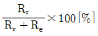
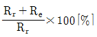
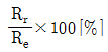
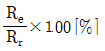
(정답률: 58%)
17. 공중선 길이가 78.5m인 반파장 다이폴 공중선의 실효길이는 약 몇 m 인가?
- 10 [m]
- 25 [m]
- 50 [m]
- 100 [m]
(정답률: 48%)
18. 급전선의 임피던스가 200[Ω] 인 전송선로에 특성 임피던스 75[Ω]인 선을 연결한다면 반사계수와 전압 정재파비는 각각 얼마 정도인가? (단, 반사계수는 m, 전압정재파비는 VSWR로 표시한다)(오류 신고가 접수된 문제입니다. 반드시 정답과 해설을 확인하시기 바랍니다.)
- m=0.45, VSWR=2.7
- m=0.65, VSWR=4.7
- m=0.55, VSWR=3.7
- m=0.75, VSWR=7
(정답률: 46%)
19. 배전압 정류회로에서 120[V]의 교류전압을 정류할 때, 최대 정류전압은 얼마인가? (단, π = 1.4로 계산하시오)
- 336[V]
- 84[V]
- 168[V]
- 62[V]
(정답률: 56%)
20. 어떤 전원의 무부하시 전압이 220[V]이고, 정격 부하시 압이 200[V}일 때 전압 변동률은?
- 5 [%]
- 10 [%]
- 15 [%]
- 20 [%]
(정답률: 70%)
2과목: 임의 구분
21. 다음 문장의 괄호 안에 각각 들어갈 말로 적합한 것은?
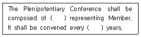
- delegates, four
- delegations, four
- delegates, six
- delegations, six
(정답률: 49%)
22. What do you call a service of radiocommunication between mobile and land station or between mobile stations?
- We call it a maritime service.
- We call it a maritime mobile service.
- We call it a mobile service.
- We call it an aeronautical maritime mobile service.
(정답률: 37%)
23. ITU의 조직 중 특정 전파 통신 문제 검토를 위해 소집되며, 전파 규칙을 개정하는 기구는?
- WRC(World Radiocommunication Conference)
- PC(Plenipotentiary Conference)
- The Council
- GS(General Secretariat)
(정답률: 67%)
24. 다음 중 밑줄 친 부분에 대한 가장 적합한 해석은?
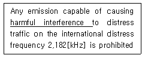
- 양호한 신호
- 유익한 통신
- 유해한 혼신
- 해로운 사고
(정답률: 83%)
25. 다음 영문에 대한 번역으로 가장 옳은 것은?
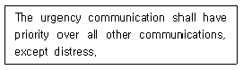
- 긴급통신은 조난통신을 포함하여 다른 통신에 우선권을 가져야 한다.
- 긴급통신은 조난통신을 제외한 모든 다른 통신에 대하여 우선권을 가져야 한다.
- 긴급통신은 조난통신과 마찬가지로 우선권을 가져야 한다.
- 긴급통신은 조난통신보다도 우선권을 가질 수 있다.
(정답률: 72%)
26. 다음 문장 중에서 괄호 안에 들어갈 적합한 내용은?
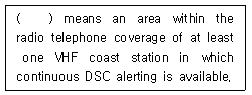
- Sea area A1
- Sea area A2
- Sea area A3
- Sea area A4
(정답률: 85%)
27. 다음 중 조난통신을 방해하는 국에 대하여 조난통신 관장국에서 통신정지 요구(침묵유지) 시 사용하는 용어로 맞는 것은?
- SEELONCE MAYDAY
- SOS QRT
- QRT DISTRESS
- SEELONCE DISTRESS
(정답률: 72%)
28. 다음 중 괄호안에 들어갈 가장 적절한 어휘는?
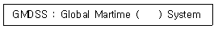
- Distree and Safety
- Search and Rescue
- Urgency and Safety
- Safety and Life
(정답률: 73%)
29. 다음 중 무선전화 알파벳 통화표에서 발음이 틀린 것은?
- F : FOKS TROT
- E : ECK OH
- L : LEE MAH
- T : TAH IM
(정답률: 61%)
30. 다음 문자 “AY"를 음성통화표에 의한 사용단어 표기로 옳은 것은?
- ALABAMA YOKE
- ALFRED YELLOW
- AMERICA YORK
- ALFA YANKEE
(정답률: 92%)
31. 다음 알파벳에 대한 음성통화표의 표기가 틀린 것은?
- B : Bravo
- K : Kilo
- N : November
- S : Service
(정답률: 75%)
32. Choose the wrong one of the Phonetic Alphabet used when giving call-sign; “HLRI”
- H : Hotel
- L : Lima
- R : Romeo
- I : Indo
(정답률: 77%)
33. Choose the suitable one in the blank and complete following sentence.
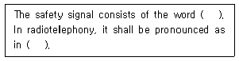
- MAYDAY, English
- PAN, English
- PAN, French
- SECURITE, French
(정답률: 89%)
34. 일본에서 영어 보통어로 선박의 항행을 위한 기상방송을 하는 무선국은?
- 해상 보안청 본청 /JNA
- 일본 기상청 본청 / JMA
- 표준주파수국 /JJY
- 관통통제 통신 사무소 /JlGC
(정답률: 70%)
35. 다음은 해상 무선표지국에 대한 설명이다 . 틀린 것은?
- 사용하는 주파수는 보통 235-385 [kHz] 사이이다.
- 날씨가 맑은 날은 불규칙한 시간대에 전파를 발사한다.
- 해상을 항해하는 선박이 그 위치를 알고자 할 때 이용한다.
- 육상으로부터 일정하게 발사하는 표지부호를 청취하여 전파의 방향을 잡아 선박의 위치를 탐지한다 .
(정답률: 84%)
36. 우리나라가 속해 있는 NAVAREA 구역은 몇 번인가?
- 3번
- 7번
- 9 번
- 11 번
(정답률: 52%)
37. 다음 밑줄 친 단어와 같은 뜻을 갖는 것은?
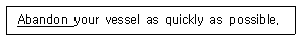
- Keep
- Take
- Give up
- Cancel
(정답률: 75%)
38. 다음의 문장의 밑줄 친 부분의 해석으로 가장 적합한 것은?
- 수행하여야 한다
- 수행이 금지된다.
- 가급적 수행토록 한다.
- 수행을 강조하여야 한다.
(정답률: 90%)
39. 다음 문장을 가장 적합하게 영역한 것은?
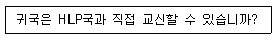
- Shall you communication in HLP directly?
- May you correspondence to HLP directly?
- Shall you conversation with HLP directly?
- Can you communicate with HLP directly?
(정답률: 74%)
40. 다음 문장의 괄호 안에 가장 적합한 것은?
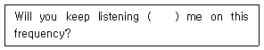
- to
- at
- about
- in
(정답률: 74%)
3과목: 임의 구분
41. 다음 중 국토해앙부령이 정하는 선박에 갖추어야 하는 무선설비에서 디지털선택호출장치의 사용주파수가 아닌 것은?
- 2187.5[kHz]
- 8414.5[kHz]
- 156.8[MHz]
- 156.525[MHz]
(정답률: 64%)
42. 다음 중 조난통신의 사용전파 ( 전파형식 및 주파수 ) 로 잘못 표기된 것은?
- 전파형식이 G3E 이고 주파수가 156.8 [MHz] 인 전파
- 전파형식이 F1B 또는 J2B 이고 주파수가 2,091 [kHz] 인 전파
- 전파형식이 H3E 또는 J3E 이고 주파수가 27,821 [kHz] 인 전파
- 전파형식이 A3E, H3E 또는 J3E 이고 주파수가 2,182 [kHz] 인 전파
(정답률: 48%)
43. 다음 중 무선설비의 공동사용 명령과 환경친화적 설치 명령의 요건에 해당되는 사항은?
- 건물 도로 등에 설치 운용하는 무선설비로서 도시미관 및 자연환경을 훼손할 우려가 있다고 인정되는 경우
- 개발제한구역에 설치∙운용하는 무선설비로서 무선설비 안테나가 비행고도에 영향을 줄 우려가 있다고 인정되는 경우
- 지하∙터널 또는 건물 내부에 설치∙운용하는 무선설비로서 전자파 강도가 인체보호기준을 초과할 우려가 있다고 인정되는 경우
- 전파밀집지역에 설치∙운용하는 무선설비로서 다른 통신망 또는 주변기기1 등에 영향을 줄 우려가 있다고 인정되는 경우
(정답률: 83%)
44. 다음 중 비상통신에 있어서의 통보송신의 우선순위가 가장 빠른 것은?
- 조난자 구조에 관한 통보
- 천재의 예보에 관한 통보
- 인명의 구조에 관한 통보
- 질서유지를 위하여 필요한 긴급조치에 관한 통보
(정답률: 58%)
45. 다음 중 무선통신의 원칙으로 적합하지 않은 것은?
- 무선통신의 내용은 필요 최소한의 사항으로 이루어져야 한다.
- 무선통신에 사용하는 용어는 가능한 한 간명해야 한다.
- 무선통신을 하는 때에는 정확하게 송신하여야 하며, 오류를 인지한 경우에는 즉시 정정한다.
- 무선통신을 하는 때에는 보안을 위해 자국의 표지부호를 붙이지 않는다.
(정답률: 76%)
46. 다음 중 적합인증 대상기자재가 아닌 것은?
- 경보자동전화장치
- 의료용 고주파이용기기
- 네비텍스수신기
- 이동가입무선전화장치
(정답률: 80%)
47. 다음 중 방송통신위원회가 전파이용의 촉진과 전파와 관련된 새로운 기술의 개발 및 전파 방송기기 산업의 발전 등을 위한 전파진흥기본계획에 해당되지 않은 사항은?
- 새로운 전파자원의 개발
- 우주통신의 개발
- 해양통신의 개발
- 전파환경의 개선
(정답률: 63%)
48. 다음 중 무선국 허가증에 기재하여야 하는 사항이 아닌 것은?
- 호출부호 또는 호출명칭
- 시설자의 주소
- 무선국의 설치장소
- 무선종사자의 정원
(정답률: 78%)
49. 다음 중 해상이동업무에서 취급하는 비상통신의 우선순위로 바르게 설정한 것은?
- 긴급도에 따라 모든 통신에 우선하여 설정할 수 있다.
- 조난통신 이하의 적절한 순위를 설정한다.
- 긴급통신 이하의 적절한 순위를 설정한다.
- 안전통신 이하의 적절한 순위를 설정한다.
(정답률: 61%)
50. 조난통신을 수신한 경우에는 다른 모든 통신에 우선하여 즉시 응답하고, 구조를 위하여 가장 편리한 위치에 있는 무선국에 통보하는 등, 최선의 조치를 취하여야 한다. 다음 중 이러한 조난 통신업무와 관련없는 무선국은?
- 해안국
- 육상국
- 선박국
- 항공국
(정답률: 60%)
51. 전파법상 무선설비의 고압전기에 해당되는 것은?
- 350[V]의 교류전압, 600[V]의 직류전압
- 600[V]의 교류전압, 750[V]의 직류전압
- 350[V]를 초과하는 교류전압, 600[V]를 초과하는 직류전압
- 600[V]를 초과하는 교류전압, 750[V]를 초과하는 직류전압
(정답률: 75%)
52. 다음 중 “무선국에 배치하여서는 아니 되는 자”에 해당되지 않는 것은?
- 한정치산자
- 금치산자
- 노약자
- 군형법 중 이적의 죄를 위반하여 금고 이상의 형을 선고 받고 그 집행을 받지 아니하기로 확정된 후 5년이 지나지 아니한 자
(정답률: 84%)
53. 다음 중 방송통신위원회가 무선종사자에 대하여 기술자격을 취소할 수 있는 경우는? (단, 위반횟수가 1회일 경우)
- 통신보안 교육을 받지 아니한 경우
- 거짓이나 그 밖의 부정한 방법으로 무선종사자의 기술자격을 취득한 경우
- 허가 또는 신고사항의 범위를 벗어나 무선국을 운용한 경우
- 안전통신을 수신하고도 필요한 조치를 하지 아니한 경우
(정답률: 95%)
54. 선박의 안전한 이동을 지원하기 위한 선박 상호간의 VHF 무선전화 통신을 무엇이라 하는가?
- 선교간 통신
- 일반무선통신
- 현장통신
- SAR 조정통신
(정답률: 88%)
55. MF대의 무선전화용 조난 및 안전주파수로 옳은 것은?
- 2.174.5[kHz]
- 2.182[kHz]
- 2.199.5[kHz]
- 2.091[kHz]
(정답률: 84%)
56. 국제해사기구(IMO)가 설립된 이래 국제협약과 통신규정을 포함한 세계 해상조난 및 안전제도를 무엇이라 하는가?
- ITC
- INMARSAT
- ITU
- GMDSS
(정답률: 60%)
57. 다음 중 기만통신에 대한 방어책으로 옳은 것은?
- 상호 약정된 확인법을 사용
- 고출력으로 전파발사
- 통신기기의 세밀한 조정
- 전파감시 기관에 신고
(정답률: 64%)
58. 다음 중 확인법을 사용할 필요가 없을 때는?
- 처음 통신 시작시
- 의심스러울 때
- 주파수 변경시
- 호출부호 변경시
(정답률: 50%)
59. 통신보안이란?
- 통신소의 위치를 탐지하는 것이다.
- 통신 내용을 감청 분석하는 것이다.
- 통신 내용의 누설을 방지하는 것이다.
- 통신 내용을 획득하는 것이다.
(정답률: 93%)
60. 암호 및 약호자재의 사용과 관리에 관한 사항으로 틀린 것은?
- 약호자재는 대외비로 취급한다.
- 암호자재는 과거용, 미래용,현재용으로 구분하여 보관한다.
- 현재용 및 미래용 자재는 교육목적으로 사용할 수 없다.
- 암호문에 대한 회신은 약어화하여 발신한다.
(정답률: 54%)